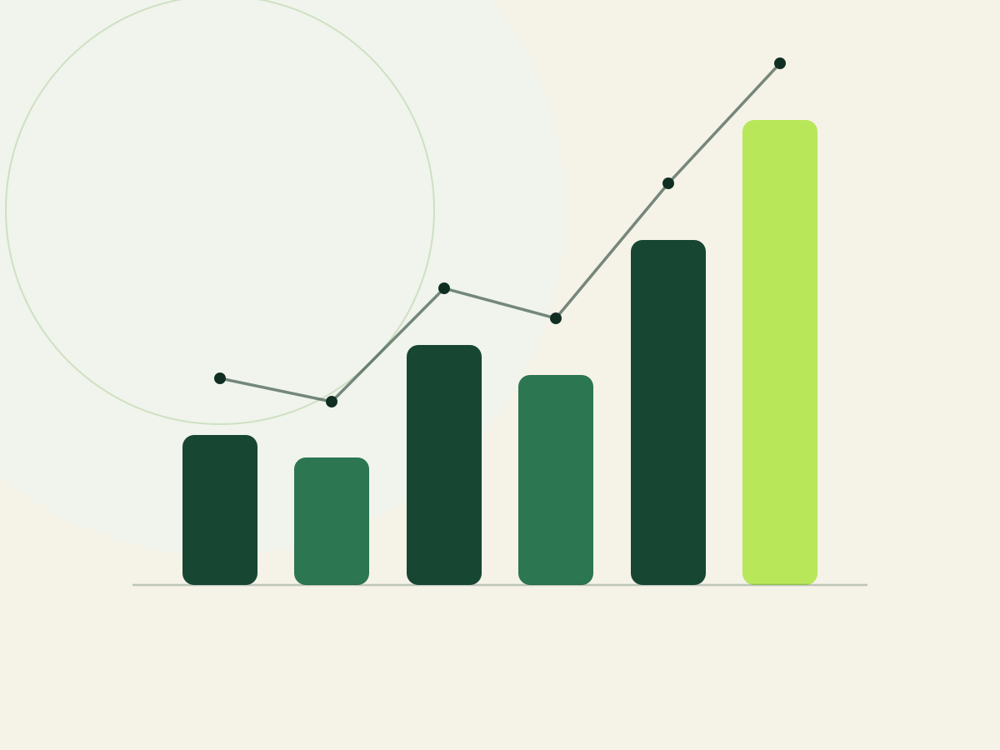

E-Commerce-Beratung
Profitabilität, Sortiment, Produktentwicklung, Sourcing und Prozesse belastbar bewerten und priorisiert umsetzen.
Zur E-Commerce-BeratungWählen Sie den Bereich, in dem aktuell der größte Engpass liegt. Jede Seite führt Sie vom Problem über das Vorgehen und den Leistungsumfang bis zum transparenten Einstieg.

Profitabilität, Sortiment, Produktentwicklung, Sourcing und Prozesse belastbar bewerten und priorisiert umsetzen.
Zur E-Commerce-BeratungPPC, Listings, SEO, Content und wirtschaftliche Kennzahlen als zusammenhängendes Wachstumssystem steuern.
Zur Amazon-BeratungWiederkehrende Prozesse pragmatisch automatisieren – mit menschlicher Kontrolle und messbarem Nutzen.
Zur KI-BeratungIn der Potenzialanalyse ordnen wir Ihre Situation ein, grenzen den sinnvollen Schwerpunkt ab und benennen konkrete nächste Schritte.
Kostenlose PotenzialanalyseZiele, Daten und Engpässe gemeinsam einordnen.
E-Commerce, Amazon oder KI nach Wirkung priorisieren.
Einen klaren, transparent bepreisten Einstieg definieren.